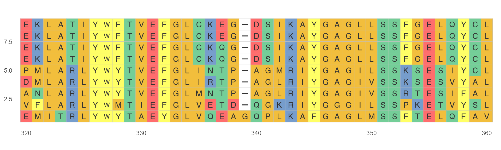
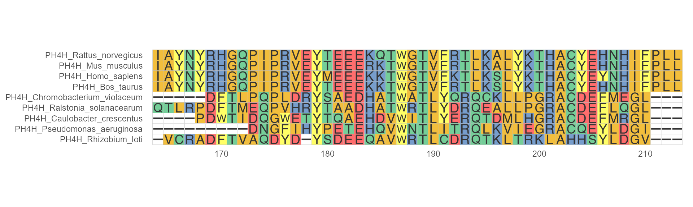
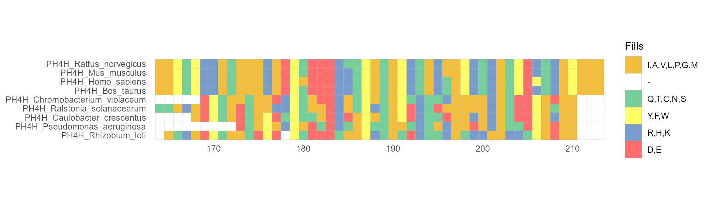
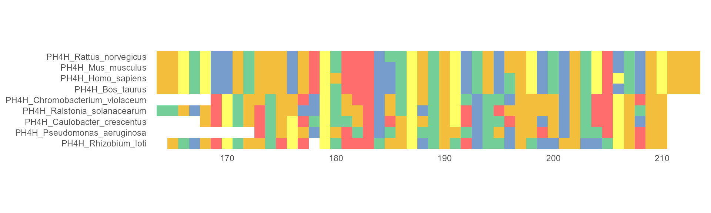
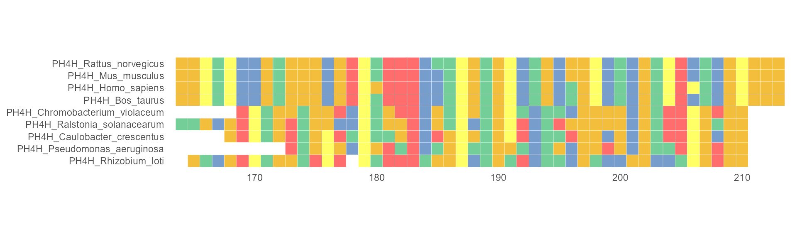

Theme
2021-09-22
MSA_theme.RmdModify components of MSA theme
In this package, there are various powerful parameters to customize the non-data components of MSA plots: i.e. font size, background, sequence names, legends and border. Some parameters can be used to give MSA plots a consistent customized look.
Characters width
Characters width can be specified by char_width. Default is 0.9.
ggmsa(protein_sequences, start = 320, end = 360, char_width = 0.5)
Background
If none_bg = TRUE, only show the character but not the colored background..
ggmsa(protein_sequences, start = 320, end = 360, none_bg = TRUE) + theme_void()
Sequence names
If seq_name = TRUE, the sequence name will be displayed.
ggmsa(protein_sequences, 164, 213, seq_name = TRUE)
Legend
If show.legend = TRUE, the legend of MSA plot will be displayed.
ggmsa(protein_sequences, 164, 213, font = NULL, show.legend = TRUE)
Border
Change or set colored block border. if border = NA, the border would be removed.
ggmsa(protein_sequences, 164, 213, font = NULL, border = NA)
Or, modify the border color by assign the color to border, like this： border = "white"
ggmsa(protein_sequences, 164, 213, font = NULL, border = "white")